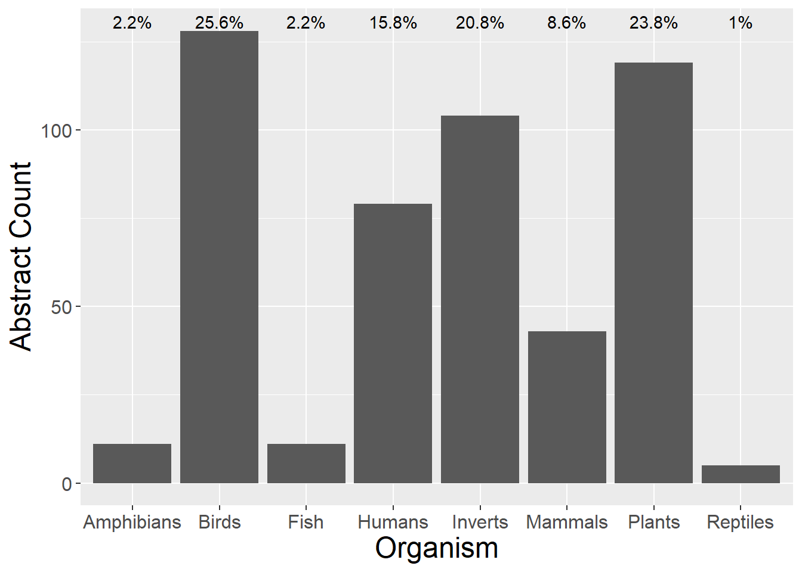
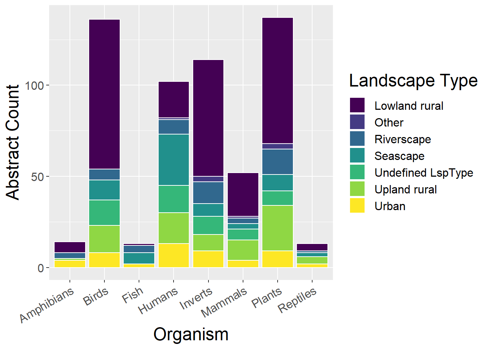
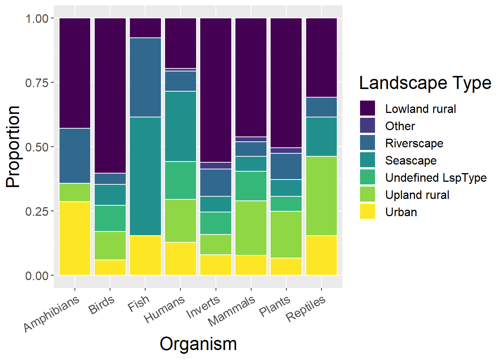
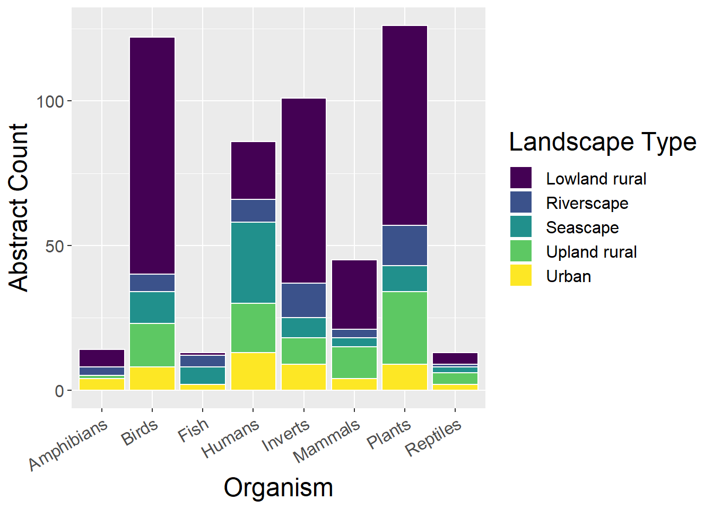
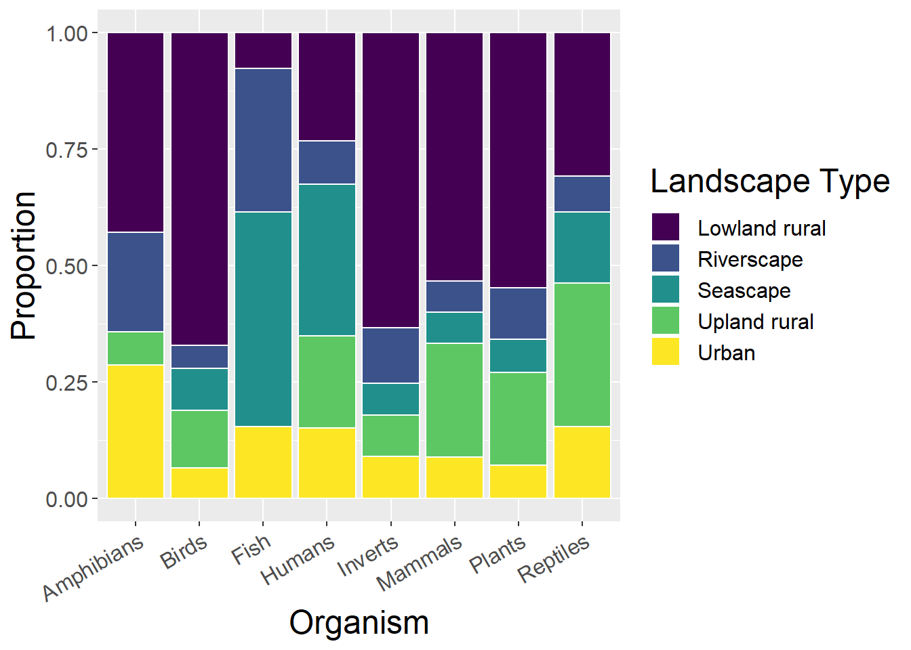

Chapter 5 Analysis by Species
Bar charts to examine how contribution to conferences have changed over time.
5.1 Total Conference Contributions
#spec(cpdata)
sppdata <- cpdata %>%
select_if(is.numeric) %>%
gather(key = SppType, value = count, Mammals:Fish) %>%
filter(count > 0) %>%
group_by(`SppType`) %>%
summarise_all(sum, na.rm=T) Quick observations:
- Amphibians, Fish, Reptiles are little studied
AsppCounts <- sppdata %>%
select(SppType,Academic, Government,NGO,Business,Private) %>%
mutate(Asum = rowSums(.[2:6])) %>% #calculate total for subsquent calcultation of proportion
gather(key = Type, value = count, -SppType, -Asum) %>%
mutate(prop = count / Asum) #calculate proportion
ggplot(AsppCounts, aes(x=SppType, y=count)) + geom_bar(stat="identity")
5.3 Landscape Type
5.3.1 Using all landscape types
Quick observations:
- Human studies are most evenly distributed across landscape types
- Unsurprisingly, fish are studies in riverscapes and seascapes
- Birds, plants and inverts studies dominated by Lowland rural studies
lspsppCounts <- sppdata %>%
select(SppType,`Upland rural`, `Lowland rural`, Urban, Riverscape, Seascape, `Undefined LspType`,Other) %>%
mutate(Asum = rowSums(.[2:8])) %>% #calculate total for subsquent calcultation of proportion
gather(key = Type, value = count, -SppType, -Asum) %>%
mutate(prop = count / Asum) #calculate proportion
ggplot(lspsppCounts, aes(x=SppType, y=count, fill=Type)) + geom_bar(stat="identity", colour="white")
ggplot(lspsppCounts, aes(x=SppType, y=prop, fill=Type)) + geom_bar(stat="identity", colour="white")
5.3.2 Without ‘Undefined LspType’ and ‘Other’ landscape types
Quick observations:
- Government has greatest proportion of Upland Rural
- Business has greatest Urban proportion and smallest Lowland Rural proportion
- Academic dominates total number of all landscape types (with possible exception of Upland Rural)
lspsppCounts <- sppdata %>%
select(SppType,`Upland rural`, `Lowland rural`, Urban, Riverscape, Seascape) %>%
mutate(Asum = rowSums(.[2:6])) %>% #calculate total for subsquent calcultation of proportion
gather(key = Type, value = count, -SppType, -Asum) %>%
mutate(prop = count / Asum) #calculate proportion
ggplot(lspsppCounts, aes(x=SppType, y=count, fill=Type)) + geom_bar(stat="identity", colour="white")
ggplot(lspsppCounts, aes(x=SppType, y=prop, fill=Type)) + geom_bar(stat="identity", colour="white")